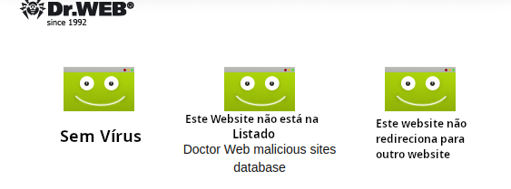

Website seguro
Alguns produtos da Nossa Loja
Infos
Desde 2011
A bithostel tem vasta experiência e gerencia o provisionamento, implantação, configuração e administração de muitas peças diferentes de hardware e software relacionados à rede e à segurança. Isso inclui firewalls, roteadores, switches, várias ferramentas de monitoramento de rede e VPNs (redes privadas virtuais).Prestamos consultoria em tecnologia de rede e aprimoramento da segurança digital.Com tradição de soluções em tecnologias Open SOURCE, a bithostel existe na “MATRIX” desde 2011, localizada na América do Sul, no Brasil em Santos-SP.
Especialista Linux(MX)
Especialistas linux em desktop e servidores Linux, vendemos computadores novos, de qualidade com o MX Linux BR, pré-instalado que é considerado uma das melhores distribuições atuais e tem o linux como um sistema operacional, mais seguro, elegante, leve e totalmente em português.
Segurança
Com relação aos seus dados pessoais de endereçamento, pagamento e conteúdo do pedido, você pode estar certo de que não serão utilizados para outros fins que não o de processamento dos pedidos realizados, não sendo portanto divulgados em hipótese alguma. Utilizamos o mercado pago como nosso Gateway de pagamento, o que torna mais segura as transações, já que ele administra e toma conta de todos os processos. Com relação à segurança no tráfego de dados, toda transação que envolver pagamento, seja por cartão de crédito ou não, estará encriptada com a tecnologia SSL (Secure Socket Layer). Isso significa que só nossa empresa terá acesso a estes dados.
Outros Serviços
Servidores Dedicados Servidor Virtual Data Center Virtual Colocation Gerenciado Nuvem Privada
Nossos computadores
Temos transparência total em nossos produtos. Todas as características e especificações estão informadas e listadas.
Método de ENVIO
Envio para todo BRASIL ! - Método de retirada Retirada no local Local de retirada bithostel TI, Rua Frei Francisco Sampaio, 283 APTO 44, Santos-São Paulo,11035-105, Brasil Horário de funcionamento 9:00-18:00 Seg-Sex Todos os produtos serão enviados de acordo com a forma escolhida pelo cliente, em até 2 dias úteis da confirmação do pagamento. O prazo para a entrega varia de acordo com a forma de envio escolhida e não é de nossa responsabilidade, ,já que a entrega fica a cargo dos Correios. Você será informado do código para rastrear sua encomenda através do site dos correios assim que ela for postada.
Trocas e devoluções
Condições de Devolução A mercadoria deverá retornar nas mesmas condições em que foi lhe foi entregue, ou seja: Lacres intactos do fabricante e/ou bithostel TI embalagem original em perfeitas condições e completa com todos os manuais, acessórios, CDs, cabos e quaisquer outros itens que façam parte do produto. É importante ressaltar que a caixa do produto também deve ser preservada em perfeitas condições, isto é, a embalagem não pode estar danificada ou violada. Esclarece-se que o produto NÃO PODE TER SIDO USADO. Situações Possíveis de Retorno da Mercadoria Existem quatro hipóteses em que a mercadoria pode ser devolvida: A. Produto avariado B. Produto em desacordo com o pedido C. Desistência da compra (Prazo de 07 dias – Conforme art. 49 do Código de Defesa do Consumidor. O produto deverá ser devolvido nas mesmas condições no qual foi entregue, ou seja, lacrado e sem nenhum sinal de uso. A devolução por arrependimento só será aceita dentro destas condições.) D. Produto com defeito técnico ou de fabricação OBS: Todas as devoluções deverão ser previamente autorizadas por nosso setor técnico responsável. É importante ressaltar que para cada situação de Retorno haverá um Prazo; sendo 48 horas para Produto Avariado (item A) ou Produto em Desacordo com o Pedido (item B), 07 dias para Desistência da Compra (item C) e no caso de Produtos que apresentem Defeitos (item D) deverá ser consultado o prazo de garantia especificada na Nota Fiscal. Como obter a autorização para retorno de mercadoria O cliente poderá solicitar troca ou devolução no próprio site da bithostel TI, através de seu Login, acessando o link “Minha Conta”, selecionando a opção “Deu problema? Acione a Garantia”, Pedidos (cujo produto em questão, esteja relacionado), Produto que deseja obter autorização de retorno. Ao realizar este procedimento será gerado um protocolo, sobre qual o setor de RMA (Autorização de retorno de Mercadoria) entrará em contato com o cliente, formalizando ou não um código de autorização relativo ao retorno. Qualquer que seja o motivo do retorno da mercadoria, esta deverá regressar à loja com todos os componentes, na embalagem original, com manuais, CDs de instalação, cabos, etc, tendo o protocolo de autorização e remetente facilmente visíveis na parte exterior embalagem. A autorização tem prazo de validade de 7 dias, sendo este o prazo máximo e não renovável para postagem do produto no correio. Caso o produto não seja recebido neste prazo, a autorização perde seu efeito e uma nova deverá ser requerida. Esclarecemos que no caso de devolução por defeito no produto, mesmo sendo a solicitação realizada dentro do prazo previsto para devolução por arrependimento da compra, a bithostel TI reserva-se o direito de providenciar o conserto do produto, nos termos do Código de Defesa do Consumidor. A) Produto Avariado O cliente deverá ficar atento no ato da entrega, recusando imediatamente o produto ou a embalagem que estiver sido avariada no transporte, devendo então entrar em contato com o nosso SAC ou Minha Conta, no prazo Maximo de 48 horas* para acionar a Garantia (ver item 2.3 e selecionar “Dano físico”). *Todos os pedidos possuem um código de rastreamento indicando onde e quando o Produto foi entregue. Solicitações de avaria não serão aceitas fora do prazo. A troca por um outro produto igual ao descrito em sua nota fiscal, será efetivada somente após o recebimento e análise das condições do produto devolvido. Constatada qualquer divergência como ausência de avaria, indícios de mau uso ou ausência de manual/acessórios, a bithostel TI fica isenta de aceitar a devolução e fazer a troca, podendo reenviar o produto ao cliente sem prévia consulta. Portanto, para sua segurança, certifique-se no ato da entrega se o produto foi avariado durante o transporte. Depois de analisadas as condições do produto devolvido e constatadas as perfeitas condições do mesmo, a bithostel TI enviará um novo produto ao cliente. B) Produto em desacordo com o pedido Caso o cliente detecte no ato da entrega que o produto encomendado e o produto adquirido são diferentes, ele deverá recusar a entrega imediatamente, se aceitou a encomenda sem observar a descrição da Nota Fiscal, o prazo para entrar em contato com o nosso SAC e acionar a Garantia (ver item 2.3 e selecionar “Dano Físico/Desacordo”) será de 48 horas. Solicitações fora desse prazo não serão aceitas, pois será considerado que o consumidor aceitou o produto enviado. Constatado qualquer desacordo, como ausência de divergência entre o produto adquirido e produto entregue, indícios de mau uso ou ausência de manual/acessórios,a bithostel TI fica isenta de aceitar a devolução e fazer a troca, podendo reenviar o produto ao cliente sem prévia consulta por frete a pagar. Portanto, para sua segurança, certifique-se no ato da entrega se o produto entregue é igual ao produto adquirido, basta confrontar o e-mail de confirmação de compra com os dados da embalagem. Depois de analisadas as condições do produto devolvido e constatadas as perfeitas condições do mesmo, a bithostel TI enviará o produto correto ao cliente. C) Desistência da Compra Na hipótese de desistência da compra, conforme previsto no Artigo 49 do Código de Defesa do Consumidor (CDC - Lei 8.078 de 11/Set/1990), restrita apenas às compras efetuadas pelo site bithostel TI, o cliente terá a opção de devolver a mercadoria no prazo de até 07 dias corridos do recebimento, respeitando requisitos dos itens 1.2 e 2.1. O cliente deverá enviar a 2ª via da nota fiscal (Pessoa Física), sendo aceito também a declaração de compra. Descreva, no verso, o motivo de sua solicitação de devolução. Em caso de cliente pessoa jurídica (CNPJ), a empresa deverá emitir uma nota fiscal de devolução (apenas dos produtos que apresentarem problemas) com os mesmos dados da nota fiscal de compra (modelo do produto, alíquotas de impostos, etc.) que foi enviada por nossa empresa juntamente com o pedido de compra. Caso esta pessoa jurídica não seja emissora de nota fiscal (como escolas, instituições, etc.), enviar umas das vias da nota fiscal de compra juntamente com uma declaração informando os produtos que estão sendo devolvidos e o motivo da devolução. O cliente irá receber uma restituição no valor dos produtos, desde que esteja dentro do prazo estabelecido pelo Código de Defesa do Consumidor. A restituição do valor será providenciada somente após o recebimento e análise das condições do produto devolvido. A bithostel TI terá o prazo de 30 dias após a confirmação da constatação do defeito pelos nossos técnicos para: 1- Inserir crédito no valor do produto, incluindo o valor do frete, o qual o cliente poderá utilizar de uma só vez para adquirir qualquer outro produto. 2- Estornar o valor do produto, incluindo o valor do frete, observando que: a- Em compras pagas no cartão de crédito, o estorno ocorrerá em até 2 (duas) faturas subseqüentes. Este procedimento é de inteira responsabilidade da administradora do seu cartão. b- Em compras pagas através de boleto bancário e cartão de débito, a restituição será efetuada via depósito, transferência, TED ou ordem de pagamento na conta corrente indicada pelo cliente. Esta devolução poderá ser feita em até 10 dias úteis. Caso fique constatado que o cliente não cumpriu com as condições de devolução ou perdeu a garantia do produto, o mesmo será devolvido sem prévia comunicação por frete a cobrar. D) Devolução de produtos com defeito Na hipótese do produto apresentar defeito de fabricação, o mesmo deverá retornar à loja para manutenção e/ou troca. É o exercício da garantia em si, portanto, é necessário que o defeito apresentado seja comunicado oficialmente à bithostel TI dentro do respectivo prazo estabelecido para cada produto, conforme descrito na nota fiscal. A partir do recebimento da mercadoria,a bithostel TI terá o prazo de 30 dias (conforme art. 18 CDC) para efetuar testes para confirmação do defeito apontado. O cliente será contatado o mais breve possível no sentido de lhe informar o resultado dos testes e a previsão de disponibilidade do produto reparado ou trocado. Único - Após os 7 dias do recebimento, o cliente deverá observar se o produto possui garantia autorizada do fabricante/fornecedor, caso exista sua troca ou manutenção devem ser feitas diretamente com o fabricante ou na assistência técnica por ele indicada, mediante apresentação da Nota Fiscal e o Termo de Garantia fornecido pelo próprio fabricante. A mercadoria deve ser enviada nas mesmas condições em que saiu da loja, na embalagem original, completa, com todos os cabos, manuais, cds e acessórios que fazem parte do conjunto. ATENÇÃO: É de inteira responsabilidade do cliente a execução prévia de cópias de segurança de quaisquer programas ou dados que julgue necessários para a reinstalação do software e arquivos do disco rígido ou outras mídias, se for o caso. Pensando em melhor atender as necessidades de seus CLIENTES, a bithostel TI, fornece aos mesmos a Garantia estendida conforme especificado em Nota Fiscal além dos 3 meses inclusos da Garantia legal (art. 18 CDC). É importante esclarecer que há diferença entre ambas as Garantias, como observaremos a seguir. Quando o produto apresentar defeito dentro dos 3 primeiros meses, e sendo este confirmado através de testes realizados em nosso departamento técnico, contactaremos o cliente o mais breve possível no sentido de lhe informar o resultado dos testes e a previsão de disponibilidade do produto reparado ou trocado. Lembramos que, conforme o CDC/art18, a bithostel TI tem um prazo de 30 dias para a solução do problema apresentado. Se até o final desse prazo a loja não tiver condições de consertar ou repor, o cliente poderá optar entre: 1. Solicitar a restituição do valor pago pelo produto 2. Negociar um abatimento no preço do produto defeituoso. 3. Inserção de créditos no login no valor total do produto. 4. Negociar um novo prazo para o conserto Já nos casos em que o vicio ocorrer após os 90 dias garantidos legalmente, a bithostel TI garantirá o serviço de reparo (mão de obra e peças originais), necessário para garantir seu perfeito funcionamento e uso. Ressaltamos que nos casos de impossibilidade de reparo, a bithostel TI, a seu exclusivo critério, substituirá o bem por um outro de mesma marca e modelo ou ainda por um modelo equivalente, mesmo que de outro fabricante, créditos no LOGIN ou restituição do valor pago. Importante: A reposição ou conserto de um produto não se constitui em nova compra, não sendo, portanto, motivo de extensão ou renovação do prazo de garantia estipulado na nota fiscal. Esta, porém, deverá ser estendida ao mínimo de 90 dias, quando a garantia "restante", contada a partir da data de compra, for menor que 90 dias. D.1) Custos de Envio de Produtos Defeituosos Todos os custos de transporte do produto entre bithostel TI e CLIENTE são de responsabilidade do CLIENTE, exceto no caso em que a loja lhe reenvia um produto que comprovadamente apresentou defeito de fabricação e que foi consertado, de acordo com as cláusulas deste Termo de Garantia. Neste caso, a modalidade de envio será a ENCOMENDA NORMAL cujo prazo de entrega geralmente varia de 3 a 10 dias úteis. Assim sendo, produtos que não apresentarem defeito, mesmo que sejam incompatíveis com o hardware do cliente não terão seu frete de retorno pagos pela bithostel TI. Caso o cliente tenha urgência no reenvio ele pode solicitar a modalidade de frete expresso, arcando, porém, com os custos de postagem adicionais. Por isso é importante que o cliente tenha certeza de que o produto adquirido apresenta defeito.
Tempo de Garantia
Todas as garantias são dadas pelos fabricantes, e variam de produto para produto. Elas serão informadas nas páginas de cada produto. Caso tenha alguma dúvida, entre em contato conosco. Para devoluções, os produtos deverão ser remetidos em suas embalagens originais e caso for constatado mal uso, o custo será por parte do comprador.
Políticas Gerais
Políticas Gerais GARANTIA A empresa bithostel TI assegura garantia contra defeito de fabricação de todos os produtos adquiridos na empresa, durante o período de cobertura, salvo se os produtos possuírem assistência técnica do fabricante, conforme especificado na nota fiscal. Os prazos de garantia dos produtos já incluem a garantia legal, conforme Art.50 do Código de Defesa do Consumidor. A GARANTIA NÃO ABRANGE Bens não adquiridos no site da bithostel TI; Defeito do PRODUTO quando operado em condições para as quais ele não está preparado; Custo de instalação, montagem ou colocação do PRODUTO, bem como os defeitos causados pela má instalação, colocação ou erros na montagem do PRODUTO; Custo de conserto do PRODUTO durante o período de cobertura da garantia do fabricante, independentemente do fabricante honrar ou não tal garantia, por força de lei, condenação judicial ou não; Programas aplicativos, sistemas operacionais, ou qualquer outro software. A responsabilidade de fazer back-up é do CLIENTE; Defeitos ocasionados por falhas ou erros durante ou após atualizações de firmware. Casos de mau funcionamento do produto por falha na configuração de software ou drives. Conserto ou reposição de peças onde normalmente há desgaste natural ou troca periódica durante o tempo de vida do PRODUTO; por ex: adaptadores de força, cabos elétricos, cabeçotes laser de aparelhos de CDs, acessórios, vidros de proteção, fusíveis internos, pilhas ou baterias internas ou externas, fitas, cartuchos; Abuso ou mau uso, imprudência ou negligência; Perda ou dano ocasionado por força maior ou caso fortuito; Carregadores de bateria, controles remotos, bem como quaisquer tipos de transformadores externos ou estabilizadores de voltagem e outros acessórios externos ao PRODUTO; Perda de Garantia A garantia bithostel TI cobre apenas defeitos de fabricação. Logo, haverá perda total de garantia em qualquer das hipóteses abaixo: Retirada ou violação dos selos de garantia ou identificação da bithostel TI e/ou fabricante. Violação, modificação, troca de componentes, ajustes ou conserto feito por pessoal não autorizado formalmente (por escrito) pela bithostel TI. Serviços solicitados e/ou executados diretamente pelo CLIENTE sem prévio consentimento da bithostel TI e/ou Fabricante; Manuseio incorreto em desacordo com o manual ou com indício de descuido. Uso de acessórios, componentes ou sistemas não originais ou não recomendados não aprovados pelo fabricante. Transporte inadequado expondo o produto a trepidações, umidade, quedas, calor ou excesso de peso sobre a peça ou embalagem. Danos físicos (amassados, arranhões, manuscritos, descaracterização, componentes queimados por descarga elétrica ou excesso de voltagem, danos decorrentes de exposição excessiva ao calor, fogo ou umidade, placas ou processadores queimados, trincados ou lascados). Danos causados por vírus. Qualquer outro defeito que não seja classificado como defeito de fabricação. TROCAS E DEVOLUÇÕES Condições de Devolução A mercadoria deverá retornar nas mesmas condições em que foi lhe foi entregue, ou seja: Lacres intactos do fabricante e/ou bithostel TI embalagem original em perfeitas condições e completa com todos os manuais, acessórios, CDs, cabos e quaisquer outros itens que façam parte do produto. É importante ressaltar que a caixa do produto também deve ser preservada em perfeitas condições, isto é, a embalagem não pode estar danificada ou violada. Esclarece-se que o produto NÃO PODE TER SIDO USADO. Situações Possíveis de Retorno da Mercadoria Existem quatro hipóteses em que a mercadoria pode ser devolvida: A. Produto avariado B. Produto em desacordo com o pedido C. Desistência da compra (Prazo de 07 dias – Conforme art. 49 do Código de Defesa do Consumidor. O produto deverá ser devolvido nas mesmas condições no qual foi entregue, ou seja, lacrado e sem nenhum sinal de uso. A devolução por arrependimento só será aceita dentro destas condições.) D. Produto com defeito técnico ou de fabricação OBS: Todas as devoluções deverão ser previamente autorizadas por nosso setor técnico responsável. É importante ressaltar que para cada situação de Retorno haverá um Prazo; sendo 48 horas para Produto Avariado (item A) ou Produto em Desacordo com o Pedido (item B), 07 dias para Desistência da Compra (item C) e no caso de Produtos que apresentem Defeitos (item D) deverá ser consultado o prazo de garantia especificada na Nota Fiscal. Como obter a autorização para retorno de mercadoria O cliente poderá solicitar troca ou devolução no próprio site da bithostel TI, através de seu Login, acessando o link “Minha Conta”, selecionando a opção “Deu problema? Acione a Garantia”, Pedidos (cujo produto em questão, esteja relacionado), Produto que deseja obter autorização de retorno. Ao realizar este procedimento será gerado um protocolo, sobre qual o setor de RMA (Autorização de retorno de Mercadoria) entrará em contato com o cliente, formalizando ou não um código de autorização relativo ao retorno. Qualquer que seja o motivo do retorno da mercadoria, esta deverá regressar à loja com todos os componentes, na embalagem original, com manuais, CDs de instalação, cabos, etc, tendo o protocolo de autorização e remetente facilmente visíveis na parte exterior embalagem. A autorização tem prazo de validade de 7 dias, sendo este o prazo máximo e não renovável para postagem do produto no correio. Caso o produto não seja recebido neste prazo, a autorização perde seu efeito e uma nova deverá ser requerida. Esclarecemos que no caso de devolução por defeito no produto, mesmo sendo a solicitação realizada dentro do prazo previsto para devolução por arrependimento da compra, a bithostel TI reserva-se o direito de providenciar o conserto do produto, nos termos do Código de Defesa do Consumidor. A) Produto Avariado O cliente deverá ficar atento no ato da entrega, recusando imediatamente o produto ou a embalagem que estiver sido avariada no transporte, devendo então entrar em contato com o nosso SAC ou Minha Conta, no prazo Maximo de 48 horas* para acionar a Garantia (ver item 2.3 e selecionar “Dano físico”). *Todos os pedidos possuem um código de rastreamento indicando onde e quando o Produto foi entregue. Solicitações de avaria não serão aceitas fora do prazo. A troca por um outro produto igual ao descrito em sua nota fiscal, será efetivada somente após o recebimento e análise das condições do produto devolvido. Constatada qualquer divergência como ausência de avaria, indícios de mau uso ou ausência de manual/acessórios, a bithostel TI fica isenta de aceitar a devolução e fazer a troca, podendo reenviar o produto ao cliente sem prévia consulta. Portanto, para sua segurança, certifique-se no ato da entrega se o produto foi avariado durante o transporte. Depois de analisadas as condições do produto devolvido e constatadas as perfeitas condições do mesmo, a bithostel TI enviará um novo produto ao cliente. B) Produto em desacordo com o pedido Caso o cliente detecte no ato da entrega que o produto encomendado e o produto adquirido são diferentes, ele deverá recusar a entrega imediatamente, se aceitou a encomenda sem observar a descrição da Nota Fiscal, o prazo para entrar em contato com o nosso SAC e acionar a Garantia (ver item 2.3 e selecionar “Dano Físico/Desacordo”) será de 48 horas. Solicitações fora desse prazo não serão aceitas, pois será considerado que o consumidor aceitou o produto enviado. Constatado qualquer desacordo, como ausência de divergência entre o produto adquirido e produto entregue, indícios de mau uso ou ausência de manual/acessórios,a bithostel TI fica isenta de aceitar a devolução e fazer a troca, podendo reenviar o produto ao cliente sem prévia consulta por frete a pagar. Portanto, para sua segurança, certifique-se no ato da entrega se o produto entregue é igual ao produto adquirido, basta confrontar o e-mail de confirmação de compra com os dados da embalagem. Depois de analisadas as condições do produto devolvido e constatadas as perfeitas condições do mesmo, a bithostel TI enviará o produto correto ao cliente. C) Desistência da Compra Na hipótese de desistência da compra, conforme previsto no Artigo 49 do Código de Defesa do Consumidor (CDC - Lei 8.078 de 11/Set/1990), restrita apenas às compras efetuadas pelo site bithostel TI, o cliente terá a opção de devolver a mercadoria no prazo de até 07 dias corridos do recebimento, respeitando requisitos dos itens 1.2 e 2.1. O cliente deverá enviar a 2ª via da nota fiscal (Pessoa Física), sendo aceito também a declaração de compra. Descreva, no verso, o motivo de sua solicitação de devolução. Em caso de cliente pessoa jurídica (CNPJ), a empresa deverá emitir uma nota fiscal de devolução (apenas dos produtos que apresentarem problemas) com os mesmos dados da nota fiscal de compra (modelo do produto, alíquotas de impostos, etc.) que foi enviada por nossa empresa juntamente com o pedido de compra. Caso esta pessoa jurídica não seja emissora de nota fiscal (como escolas, instituições, etc.), enviar umas das vias da nota fiscal de compra juntamente com uma declaração informando os produtos que estão sendo devolvidos e o motivo da devolução. O cliente irá receber uma restituição no valor dos produtos, desde que esteja dentro do prazo estabelecido pelo Código de Defesa do Consumidor. A restituição do valor será providenciada somente após o recebimento e análise das condições do produto devolvido. A bithostel TI terá o prazo de 30 dias após a confirmação da constatação do defeito pelos nossos técnicos para: 1- Inserir crédito no valor do produto, incluindo o valor do frete, o qual o cliente poderá utilizar de uma só vez para adquirir qualquer outro produto. 2- Estornar o valor do produto, incluindo o valor do frete, observando que: a- Em compras pagas no cartão de crédito, o estorno ocorrerá em até 2 (duas) faturas subseqüentes. Este procedimento é de inteira responsabilidade da administradora do seu cartão. b- Em compras pagas através de boleto bancário e cartão de débito, a restituição será efetuada via depósito, transferência, TED ou ordem de pagamento na conta corrente indicada pelo cliente. Esta devolução poderá ser feita em até 10 dias úteis. Caso fique constatado que o cliente não cumpriu com as condições de devolução ou perdeu a garantia do produto, o mesmo será devolvido sem prévia comunicação por frete a cobrar. D) Devolução de produtos com defeito Na hipótese do produto apresentar defeito de fabricação, o mesmo deverá retornar à loja para manutenção e/ou troca. É o exercício da garantia em si, portanto, é necessário que o defeito apresentado seja comunicado oficialmente à bithostel TI dentro do respectivo prazo estabelecido para cada produto, conforme descrito na nota fiscal. A partir do recebimento da mercadoria,a bithostel TI terá o prazo de 30 dias (conforme art. 18 CDC) para efetuar testes para confirmação do defeito apontado. O cliente será contatado o mais breve possível no sentido de lhe informar o resultado dos testes e a previsão de disponibilidade do produto reparado ou trocado. § único - Após os 7 dias do recebimento, o cliente deverá observar se o produto possui garantia autorizada do fabricante/fornecedor, caso exista sua troca ou manutenção devem ser feitas diretamente com o fabricante ou na assistência técnica por ele indicada, mediante apresentação da Nota Fiscal e o Termo de Garantia fornecido pelo próprio fabricante. A mercadoria deve ser enviada nas mesmas condições em que saiu da loja, na embalagem original, completa, com todos os cabos, manuais, cds e acessórios que fazem parte do conjunto. ATENÇÃO: É de inteira responsabilidade do cliente a execução prévia de cópias de segurança de quaisquer programas ou dados que julgue necessários para a reinstalação do software e arquivos do disco rígido ou outras mídias, se for o caso. Pensando em melhor atender as necessidades de seus CLIENTES, a bithostel TI, fornece aos mesmos a Garantia estendida conforme especificado em Nota Fiscal além dos 3 meses inclusos da Garantia legal (art. 18 CDC). É importante esclarecer que há diferença entre ambas as Garantias, como observaremos a seguir. Quando o produto apresentar defeito dentro dos 3 primeiros meses, e sendo este confirmado através de testes realizados em nosso departamento técnico, contactaremos o cliente o mais breve possível no sentido de lhe informar o resultado dos testes e a previsão de disponibilidade do produto reparado ou trocado. Lembramos que, conforme o CDC/art18, a bithostel TI tem um prazo de 30 dias para a solução do problema apresentado. Se até o final desse prazo a loja não tiver condições de consertar ou repor, o cliente poderá optar entre: 1. Solicitar a restituição do valor pago pelo produto 2. Negociar um abatimento no preço do produto defeituoso. 3. Inserção de créditos no login no valor total do produto. 4. Negociar um novo prazo para o conserto Já nos casos em que o vicio ocorrer após os 90 dias garantidos legalmente, a bithostel TI garantirá o serviço de reparo (mão de obra e peças originais), necessário para garantir seu perfeito funcionamento e uso. Ressaltamos que nos casos de impossibilidade de reparo, a bithostel TI, a seu exclusivo critério, substituirá o bem por um outro de mesma marca e modelo ou ainda por um modelo equivalente, mesmo que de outro fabricante, créditos no LOGIN ou restituição do valor pago. Importante: A reposição ou conserto de um produto não se constitui em nova compra, não sendo, portanto, motivo de extensão ou renovação do prazo de garantia estipulado na nota fiscal. Esta, porém, deverá ser estendida ao mínimo de 90 dias, quando a garantia "restante", contada a partir da data de compra, for menor que 90 dias. D.1) Custos de Envio de Produtos Defeituosos Todos os custos de transporte do produto entre bithostel TI e CLIENTE são de responsabilidade do CLIENTE, exceto no caso em que a loja lhe reenvia um produto que comprovadamente apresentou defeito de fabricação e que foi consertado, de acordo com as cláusulas deste Termo de Garantia. Neste caso, a modalidade de envio será a ENCOMENDA NORMAL cujo prazo de entrega geralmente varia de 3 a 10 dias úteis. Assim sendo, produtos que não apresentarem defeito, mesmo que sejam incompatíveis com o hardware do cliente não terão seu frete de retorno pagos pela bithostel TI. Caso o cliente tenha urgência no reenvio ele pode solicitar a modalidade de frete expresso, arcando, porém, com os custos de postagem adicionais. Por isso é importante que o cliente tenha certeza de que o produto adquirido apresenta defeito. FORMA DE REMESSA A remessa deve ser feita através dos Correios. O equipamento deve ser remetido diretamente à loja. A bithostel TI não se responsabiliza pela retirada nos correios ou em outros locais. O endereço para retorno dos produtos é: bithostel TI Rua Frei Francisco Sampaio, 283/44 – Santos/SP CEP: 11040-221 #NUMERODOPEDIDO
Algumas coisas sobre a bithostel TI

Fabio Lipel Schmit
bithostel ti

Computadores com a qualidade da Oceano Informática com MX Linux BR, instalado. Enviamos em dois dias íteis...
Oceano Informática
Santos-SP


Temos como carro chefe de nossos produtos o MX Linux...